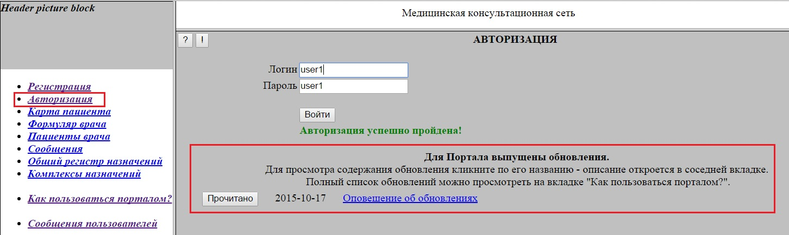
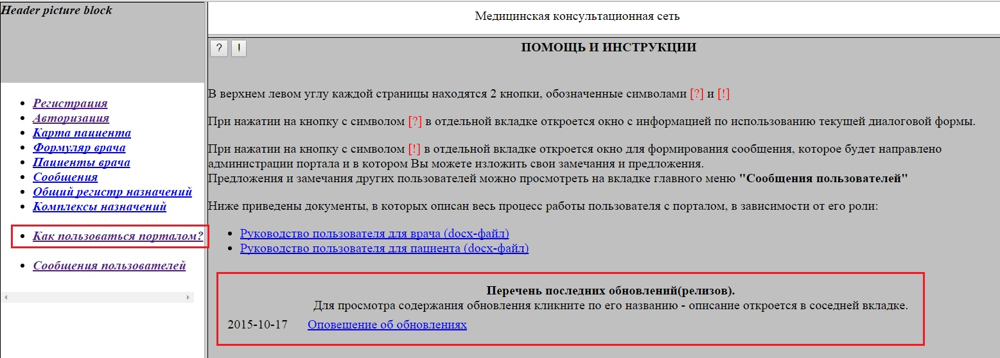
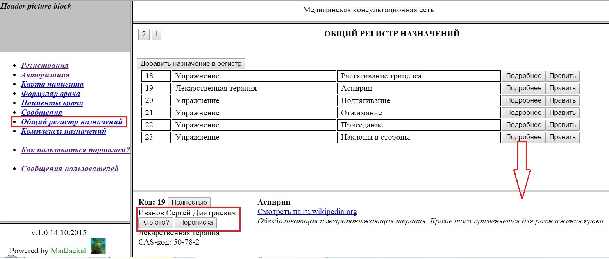
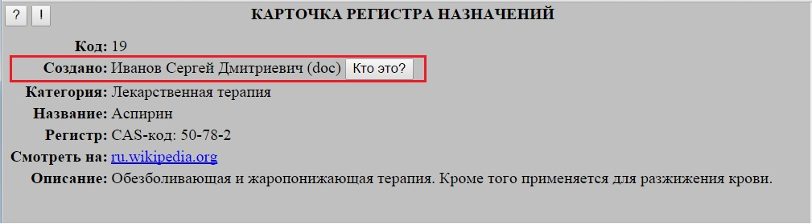
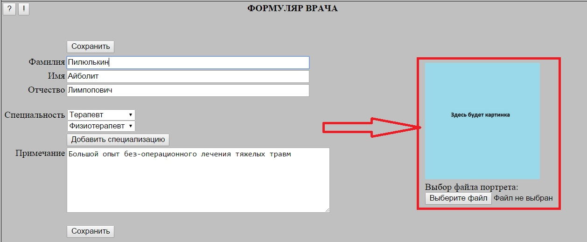
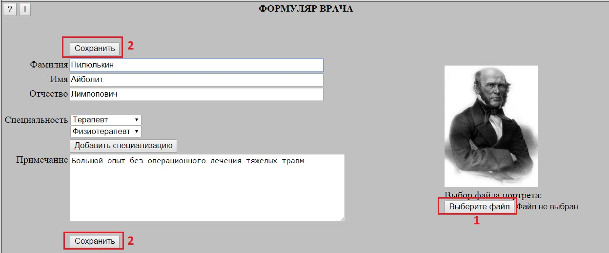

При успешной регистрации пользователя в нижней части формы авторизации отображается список последних обновлений, не прочитанных пользователем.
Для просмотра содержания обновления необходимо кликнуть по названию обновления - при этом в соседней вкладке откроется соотвествующее описание.
Чтобы описание обновления более не показывалось пользователю, необходимо нажать кнопку "Прочитано".

Полный список последних обновлений можно просмотреть на закладке "Как пользоваться порталом".
Причем, в нем буду отображены все обновления, независимо от того, пометил их пользователь как прочитанные или нет.

Идентификация создателя карточки назначения
В расшифровке карточки Общего регистра назначений теперь указываются ФИО создателя.
Кроме того, добавлены две кнопки:
"Кто это?" - для просмотра формуляра данного врача
"Переписка" - для перехода в форму диалоговой переписки с ним

В просмотровой карточке назначения указывается ФИО создателя и добавлена кнопка "Кто это?" - для просмотра формуляра данного врача.

Портрет в Формуляре врача
В Фромуляре врача появилась возможность вставки портрета.
Изначально на месте портрета находится размерная заглушка:

Для добавления (или изменения) портрета необходимо, нажав на кнопку "Выбирете файл" (1), указать нужный файл.
После нажатия кнопки "Сохранить" (2) выбранный портрет отобразится на форме:

При наличии портрета в Формуляре врача он также отображается в просмотровом варианте Формуляра (вызываемом из различных форм по кнопке "Кто это?"),
а также в кратком варианте формуляра, отображаемом на странице управления доступом в Карточке пациента: